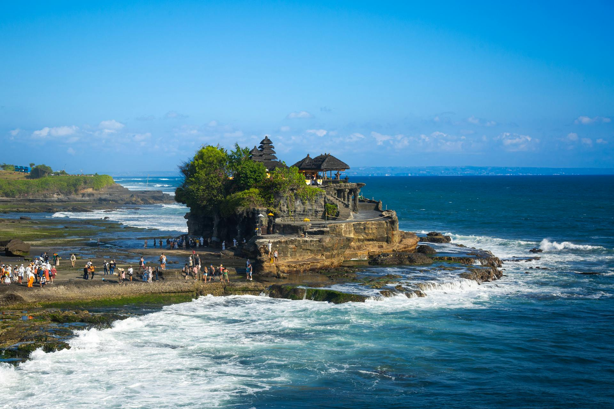

Bali merupakan salah satu pulau terkenal di Indonesia yang memiliki keindahan alam yang sangat menarik. Pulau ini sering dikunjungi oleh wisatawan dari berbagai daerah maupun dari luar negeri. Selain memiliki pemandangan yang indah, Bali juga terkenal dengan budaya dan tradisinya yang masih dijaga dengan baik oleh masyarakat.
Di Bali terdapat banyak tempat wisata yang menarik untuk dikunjungi. Beberapa tempat wisata terkenal yaitu Pantai Kuta, Tanah Lot, Ubud, dan berbagai tempat lainnya. Wisatawan dapat menikmati pemandangan pantai, gunung, persawahan, serta berbagai pertunjukan seni budaya yang menarik.
Selain tempat wisatanya yang indah, masyarakat Bali juga terkenal ramah dan sopan terhadap wisatawan. Keramahan masyarakat membuat para pengunjung merasa nyaman saat berlibur. Hal tersebut menjadikan Bali sebagai salah satu tujuan wisata favorit bagi banyak orang.
Keindahan alam dan budaya yang dimiliki Bali menjadikannya sebagai salah satu kebanggaan Indonesia. Oleh karena itu, kita perlu menjaga kebersihan dan kelestarian lingkungan agar keindahan Bali tetap terjaga dan dapat dinikmati oleh generasi berikutnya.